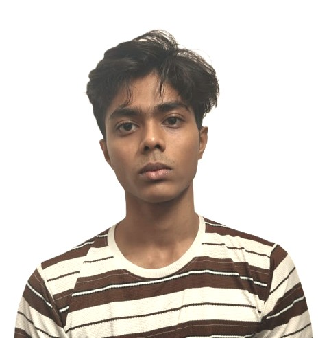

01 / Tech enthusiast & aspiring software developer
Turning ideas
into projects.
Turning ideas into projects while learning along the way.
⌖ Picnic Garden Road, Kolkata

DEBJITDAS
02 / About me
A work in
progress.
I am Debjit, a tech enthusiast and aspiring software developer who enjoys making ideas tangible through code.
I love to watch anime and play games. Those worlds keep me curious about storytelling, systems, design, and the small details that make an experience memorable.
Currently based in
Picnic Garden Road
03 / Projects
Things I've
made.
Each project is a small experiment in learning by doing. Click any card to explore it.
04 / Skills
Learning the
fundamentals.
05 / Education
Future Institute of Engineering and Management
1st year · MAKAUT
06 / Keep in touch
Let's make
something next.
I am always open to learning, collaborating, and hearing about interesting ideas.
debjitd586@gmail.com ↗